ВЫПУСКНОЙ КОЛЛЕКТОР > СНЯТИЕ |
| 1. СНИМИТЕ ВЕРХНЕЕ УПЛОТНЕНИЕ КРОНШТЕЙНА РАДИАТОРА |
Освободите 13 фиксаторов и снимите верхнее уплотнение кронштейна радиатора.
| 2. СНИМИТЕ ДЕКОРАТИВНУЮ КРЫШКУ V-ОБРАЗНОГО ДВИГАТЕЛЯ |
 |
Поднимите переднюю часть декоративной крышки V-образного двигателя, чтобы открепить 2 штифта. Затем снимите 2 крюка декоративной крышки V-образного двигателя с кронштейна, чтобы снять декоративную крышку V-образного двигателя.
| *1 | Штифт |
| *2 | Крюк |
| 3. СНИМИТЕ ШЛАНГ И КРЫШКУ ВОЗДУШНОГО ФИЛЬТРА |
| 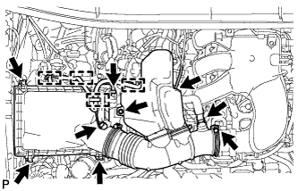 |
Снимите крышку и шланг воздушного фильтра.
Отсоедините разъем датчика массового расхода воздуха, вакуумный шланг, вентиляционный шланг и 4 хомута.
Ослабьте хомут.
Отсоедините 4 откидных защелки, выверните болт и снимите крышку и шланг воздушного фильтра.
| 4. СНИМИТЕ КОРПУС ВОЗДУШНОГО ФИЛЬТРА В СБОРЕ |
Снимите фильтрующий элемент воздушного фильтра.
| 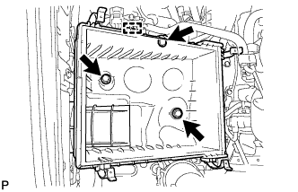 |
Освободите зажим жгута проводов.
Выверните 3 болта и снимите корпус воздушного фильтра.
| 5. СНИМИТЕ УПЛОТНЕНИЕ ФАРТУКА ЛЕВОГО ПЕРЕДНЕГО КРЫЛА |
| 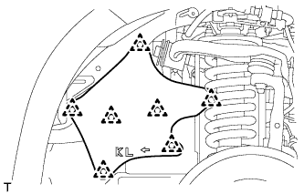 |
Для моделей с KDSS:
Освободите 7 фиксаторов и снимите уплотнение фартука крыла.
| 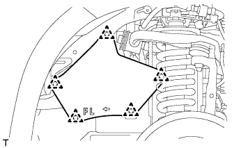 |
Для моделей без KDSS:
Освободите 5 фиксаторов и снимите уплотнение фартука крыла.
| 6. СНИМИТЕ УПЛОТНЕНИЕ ФАРТУКА ПРАВОГО ПЕРЕДНЕГО КРЫЛА |
| 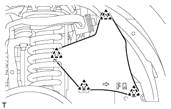 |
Освободите 4 фиксаторов и снимите уплотнение фартука крыла.
| 7. СНИМИТЕ УПЛОТНЕНИЕ № 1 МЕЖДУ ФАРТУКОМ ЛЕВОГО ПЕРЕДНЕГО КРЫЛА И РАМОЙ |
| 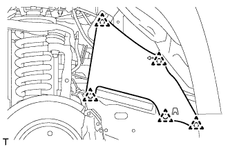 |
Снимите 5 фиксаторов и уплотнение рамы.
| 8. СНИМИТЕ УПЛОТНЕНИЕ № 1 МЕЖДУ ФАРТУКОМ ПРАВОГО ПЕРЕДНЕГО КРЫЛА И РАМОЙ |
| 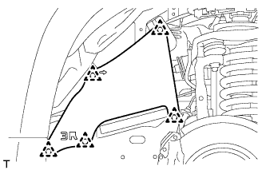 |
Освободите 5 фиксаторов и снимите уплотнение фартука крыла.
| 9. СНИМИТЕ ПРИЕМНУЮ ТРУБУ В СБОРЕ |
Снимите приемную трубу (Нажмите здесь).
| 10. СНИМИТЕ ОПОРУ КОЛЛЕКТОРА |
| 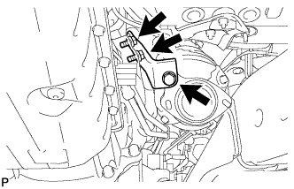 |
Отверните 3 болта и снимите опору коллектора.
| 11. СНИМИТЕ ВОЗДУШНЫЙ ПАТРУБОК (для моделей со вспомогательной системой подачи воздуха в нейтрализатор) |
| 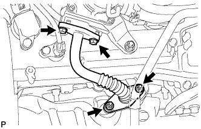 |
Выверните 2 болта, отверните 2 гайки и снимите воздушный патрубок.
Снимите 2 прокладки с воздушного патрубка.
| 12. ОТСОЕДИНИТЕ ПРОМЕЖУТОЧНЫЙ ВАЛ № 2 РУЛЕВОГО УПРАВЛЕНИЯ В СБОРЕ (для моделей с правосторонним рулевым управлением) |
Для моделей с наклонной телескопической рулевой колонкой с ручным приводом:
Отсоедините промежуточный вал № 2 рулевого управления (Нажмите здесь).
Для моделей с наклонной телескопической рулевой колонкой с электроприводом:
Отсоедините промежуточный вал № 2 рулевого управления (Нажмите здесь).
| 13. СНИМИТЕ ТЕПЛОЗАЩИТНЫЙ ЭКРАН ВЫПУСКНОГО КОЛЛЕКТОРА № 1 |
| 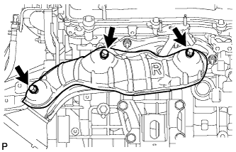 |
Отверните 3 болта и снимите теплозащитный экран.
| 14. СНИМИТЕ ПРАВЫЙ ВЫПУСКНОЙ КОЛЛЕКТОР В СБОРЕ |
| 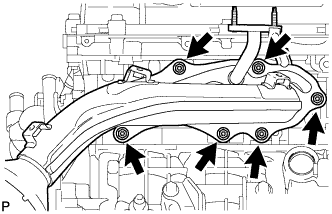 |
Для моделей с системой дополнительной подачи воздуха в нейтрализатор:
Отсоедините разъем датчика состава топливовоздушной смеси.
Отверните 6 гаек и снимите коллектор и прокладку.
| 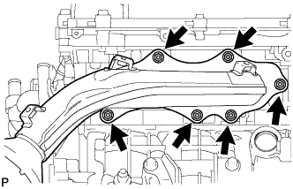 |
Для моделей без системы дополнительной подачи воздуха в нейтрализатор:
Отсоедините разъем датчика состава топливовоздушной смеси.
Отверните 6 гаек и снимите коллектор и прокладку.
| 15. СНИМИТЕ ДАТЧИК СОСТАВА ТОПЛИВОВОЗДУШНОЙ СМЕСИ (датчик 1 ряда 1) |
| 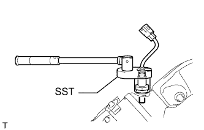 |
С помощью SST снимите датчик.
| 16. СНИМИТЕ ОПОРУ КОЛЛЕКТОРА № 2 |
| 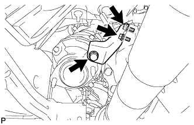 |
Выверните 3 болта и снимите опору коллектора № 2.
| 17. СНИМИТЕ ВОЗДУШНЫЙ ПАТРУБОК № 2 (для моделей со вспомогательной системой подачи воздуха в нейтрализатор) |
| 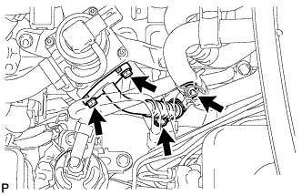 |
Выверните 2 болта, отверните 2 гайки и снимите воздушный патрубок № 2.
Снимите 2 прокладки с воздушного патрубка № 2.
| 18. СНИМИТЕ ТЕПЛОЗАЩИТНЫЙ ЭКРАН ВЫПУСКНОГО КОЛЛЕКТОРА № 2 |
| 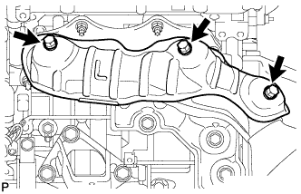 |
Отверните 3 болта и снимите теплозащитный экран.
| 19. СНИМИТЕ ЛЕВЫЙ ВЫПУСКНОЙ КОЛЛЕКТОР В СБОРЕ |
| 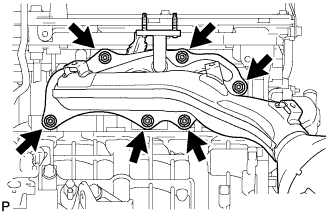 |
Для моделей с системой дополнительной подачи воздуха в нейтрализатор:
Отсоедините разъем датчика состава топливовоздушной смеси.
Отверните 6 гаек и снимите коллектор и прокладку.
| 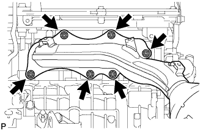 |
Для моделей без системы дополнительной подачи воздуха в нейтрализатор:
Отсоедините разъем датчика состава топливовоздушной смеси.
Отверните 6 гаек и снимите коллектор и прокладку.
| 20. СНИМИТЕ ДАТЧИК СОСТАВА ТОПЛИВОВОЗДУШНОЙ СМЕСИ (датчик 2 ряда 1) |
| 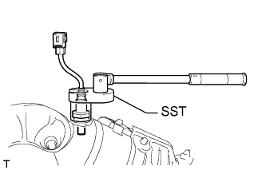 |
С помощью SST снимите датчик.